A Company Remembered Mostly In Fragments
Fun Games is one of those early arcade companies that initially looks smaller than it really was.
A modern researcher can begin with a few database entries, a handful of flyer scans, scattered cabinet photographs, several MAME listings, and a familiar sentence about Atari having sued the company. That trail invites a short treatment. It is easy to imagine a paragraph about former Atari employees, a list of seven games, a mention of a lawsuit, and a sentence saying the company folded in 1977.
That version would be tidy. It would also throw away most of what makes Fun Games historically useful.
The deeper record shows a company with a real industrial address, real executives, an identifiable sales philosophy, multiple product lines, domestic and international distribution ambitions, technical documentation, service support, trade-show activity, legal trouble, secured financing, creditors, and enough leftover inventory to remain useful to another manufacturer after the corporation had failed. The individual games matter, but the company story is larger than the games.
Fun Games also demonstrates a recurring problem in arcade history. The major companies survive in the record because they generated enormous archives and because later collectors cared enough to preserve them. Smaller companies often survive unevenly. A flyer remains here. A manual appears there. A trade article gets scanned decades later. A court citation survives in another lawsuit. A former employee remembers a warehouse full of cabinets. One modern database misreads a title, another duplicates it, and a third repeats a release date that originated as someone’s guess.
Over time, the company shrinks in memory because the evidence is scattered.
Fun Games did not become small in history because nothing happened there. It became small because the evidence had to be reassembled.
Oakland, 8410 Amelia Street, And The Industrial World Behind The Games
The physical center of the Fun Games story is 8410 Amelia Street in Oakland.
The address appears in company documentation and contemporary trade material. It matters because obscure arcade firms are often difficult to place physically. In this case, the address leads directly to one of the company’s most important relationships: Corobilt Container Company.
Historical directory and site evidence places Corobilt at the same Oakland industrial property before, during, and after the years when Fun Games operated there. Corobilt had been present by the early 1970s, and records associated with the property extend beyond Fun Games’ short life. This was therefore not simply a random warehouse rented by a new arcade startup. Fun Games was operating inside an industrial environment already connected to a larger manufacturing concern.
The relationship becomes more significant when Oberto Alvarez enters the story.
Alvarez had worked for Corobilt before founding Fun Games. Later historical reconstruction describes him rising from modest beginnings inside the company into a management role associated with wood products. Whether every detail of that later reconstruction can be independently proven from surviving corporate records remains a separate question, but the broad relationship is well supported: Alvarez knew Corobilt, Fun Games operated from the Corobilt-associated site, and Corobilt later held a secured financial interest in Fun Games’ assets.
That combination is too substantial to dismiss as coincidence.
At the same time, it does not justify calling Fun Games a Corobilt subsidiary. No recovered document has yet established the precise equity structure, ownership percentages, board control, or legal parent-subsidiary relationship. The safest conclusion is narrower and stronger: Fun Games operated from the same industrial environment as Corobilt, Alvarez had a prior Corobilt management connection, and Corobilt later became a secured creditor with a meaningful financial stake in Fun Games’ assets.
That industrial connection helps explain the character of Fun Games.
Many small video-game companies struggled to move from circuit design into cabinet production. A board could be clever and still fail commercially if the company could not build cabinets, source wood and metal parts, assemble equipment consistently, provide replacement parts, or ship machines on time. Fun Games, by contrast, began life with access to a serious industrial environment.
That does not prove Corobilt physically fabricated every cabinet. It does make cabinet manufacturing and assembly at the Amelia Street operation far more plausible than the image of a handful of engineers improvising in a garage.
The distinction matters. Fun Games was short-lived, but it was not flimsy.
Oberto Alvarez: From Industrial Manufacturing To Coin-Op
If Fun Games has one central human figure, it is Oberto Alvarez.
Alvarez appears in contemporary material as company president, and later histories identify him as founder. More revealing than the title is the type of company he tried to build.
Alvarez did not publicly present Fun Games as a designer-led laboratory. He repeatedly talked like a businessman concerned with distributors, operators, market saturation, production quantities, and resale value. In a 1976 company profile, Fun Games described a philosophy in which marketing would identify what the market needed and engineering would respond to those needs.
That is an unusually useful piece of evidence because it gives the company a personality.
Arcade history is often written backward from celebrated designers. The successful game becomes the center of the story, and everything else becomes support. Fun Games appears to have thought in the opposite direction. The market was supposed to come first. A product mattered because distributors could sell it and operators could earn with it.
That philosophy appears repeatedly in the catalog.
Take Five promised multiple games in one machine.
Take Seven promised even more.
Tankers offered recognizable competitive tank combat.
BiPlane offered aerial fighting.
BiPlane 4 expanded the idea into four-player spectacle.
Race put Fun Games into the lucrative driving category.
King presented an outrageous, instantly readable giant-ape-versus-biplane theme.
Whatever the technical lineage of individual games, these were products that could be explained quickly on a distributor floor.
Alvarez also demonstrated a concern with operator economics that went beyond the immediate sale. The strongest example is BiPlane 4. Fun Games promoted the machine as an expensive premium attraction and claimed production would be limited to roughly 350 units worldwide. Alvarez framed that limit as protection for operators: scarcity, he argued, would help preserve resale value and prevent the machine from being flooded into the market.
Whether Fun Games would really have stopped at unit 350 in the face of overwhelming demand is unknowable. The important historical point is the sales argument itself.
Alvarez understood depreciation.
He knew operators were not simply buying entertainment; they were buying earning equipment whose value could collapse rapidly when too many examples appeared or when the next technological wave arrived.
That concern would prove painfully relevant to Fun Games’ own later history.
May 1975: Fun Games Enters The Business
The safest working date for Fun Games’ entry into coin-operated video games is approximately May 1975.
The exact legal incorporation filing remains unrecovered, so the public company snapshot should not pretend that a legal date has been established when it has not. Commercial activity, however, is clearly visible in 1975, and later historical reconstruction places the company’s arcade entry in May.
By the time Fun Games became visible, Alvarez had assembled several of the pieces needed for a functioning arcade manufacturer.
Pat Karns brought sales knowledge from Atari.
Larry Leppert brought engineering experience from Atari and from the troubled Mar-Quin venture.
Alvarez brought management, industrial experience, and the Corobilt relationship.
That combination gave Fun Games something most startups need time to develop: practical knowledge of how the industry worked.
Atari’s own rapid growth had unintentionally helped create that opportunity. The company trained people in sales, engineering, manufacturing, and arcade distribution. When those people left, they carried their knowledge elsewhere. Early arcade history is full of these human chains. Companies rose and fell quickly, but employees moved on.
Fun Games is one of the clearest examples.
Mar-Quin: The Missing Bridge Between Atari And Fun Games
Larry Leppert’s path into Fun Games was not simply Atari to Oakland.
Between Atari and Fun Games sat Mar-Quin.
Mar-Quin attempted to enter the video-game business during the first arcade boom. Atari sued the company in 1975, alleging unfair competition and related conduct, and the operation did not develop into a durable manufacturer.
The surviving record strongly suggests that Fun Games absorbed at least part of the people, ideas, or work associated with Mar-Quin’s failed game effort.
That does not make Fun Games the formal legal successor to Mar-Quin. No recovered merger or acquisition document supports such a clean statement.
The safer interpretation is practical rather than corporate: personnel and technical work moved through Mar-Quin into Fun Games.
This helps explain why Fun Games appears so quickly with an organized engineering operation and why Atari’s later complaints against Fun Games concerned more than casual similarity between two arcade machines.
The controversy traveled with people.
The Company Arrives Fast
Fun Games did not spend its first year cautiously testing one product.
Its 1975 catalog already included four confirmed families:
Take Five Take Seven Tankers BiPlane
For a brand-new company, that is aggressive.
It suggests Fun Games was trying to establish a complete identity rather than a single hit. The strategy gave distributors several types of machines to sell and gave the company multiple chances to find operator acceptance.
It also increased financial risk.
Every additional product required boards, cabinets, artwork, controls, wiring, manuals, spare parts, production planning, sales support, and service knowledge. A company can look larger by carrying more products, but it also needs more working capital to support them.
That tension between ambition and capital becomes one of the central themes of the Fun Games story.
Take Five: Selling Variety
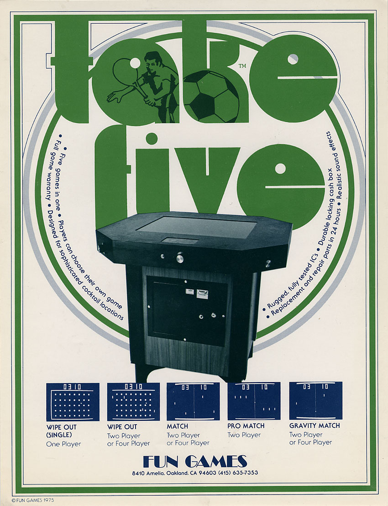
Take Five is one of the clearest expressions of Fun Games’ marketing-first philosophy.
The pitch was built into the title: one machine, five games.
Multi-game equipment had obvious appeal in the mid-1970s. Operators were still learning which kinds of video play would hold customer attention, and a cabinet that could offer several selections promised flexibility. It also gave a distributor a very simple talking point.
Take Five is a firmly established Fun Games commercial product. Original advertising survives. More than one flyer version is known. Schematic material survives. The game has also reached modern preservation through MAME.
That does not mean every aspect of the original hardware is perfectly reproduced today. Early video hardware can depend on analog behavior, timing, discrete logic, and components that are difficult to emulate with total fidelity. But Take Five is far better preserved than many products from comparably obscure companies.
The machine also has a broader commercial family.
United Games marketed related multi-game equipment, including Video 5 and Video 5 Plus 2, and Elcon Industries produced a related five-game machine. Modern sources often describe these as derivatives or clones of Fun Games products.
The exact legal relationships remain unresolved.
No recovered agreement establishes whether United Games licensed the design, purchased boards, independently copied the concept, or participated through some other commercial arrangement. The same caution applies to Elcon.
For the Fun Games catalog, however, the rule is simple.
Take Five counts once.
Related machines from United or Elcon belong in the surrounding history, not as extra Fun Games originals.
Take Seven: Seven Games And One Especially Interesting Mode
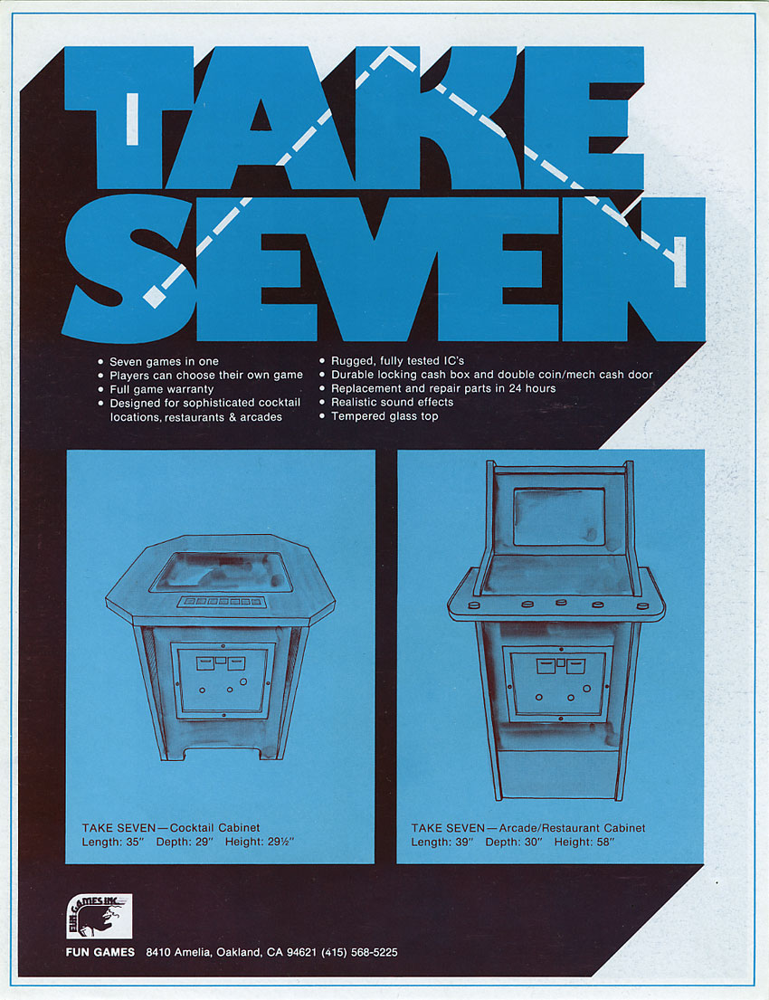
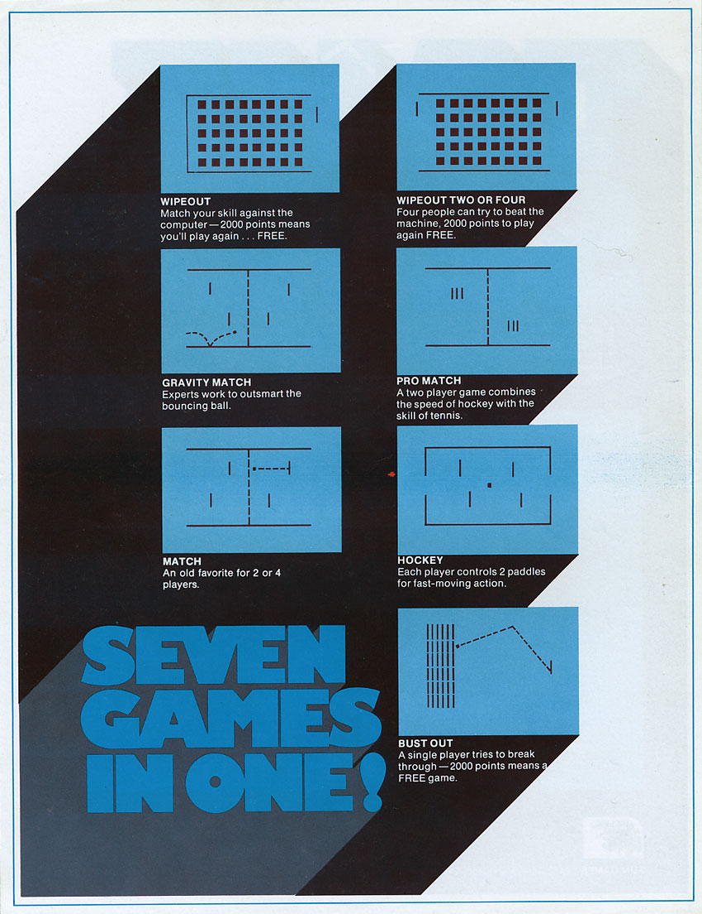
Take Seven pushed the same philosophy further.
The original Fun Games advertising establishes the product and its seven selections, including Wipeout, Wipeout Two or Four, Gravity Match, Pro Match, Match, Hockey, and Bust Out.
Bust Out is the selection that gives Take Seven broader historical significance.
The mode is a brick-breaking game. A player returns a moving object toward a field or wall of targets, anticipating the play style that would soon become famous through Atari’s Breakout.
That fact is interesting enough without turning it into a sensational claim.
The chronology around early brick-breaking concepts is messy. Game ideas circulated rapidly. Development could begin long before a public release. Trade announcements do not necessarily reveal when an engineer first began working on a concept. Similar ideas could also emerge independently.
Therefore Take Seven does not prove that Fun Games invented Breakout, and it does not prove that Atari stole Breakout from Fun Games.
What it does prove is historically meaningful on its own: a commercial Fun Games multi-game product included a brick-breaking mode called Bust Out early enough to deserve a place in the broader prehistory of Breakout-style arcade play.
Take Seven also became important during the collapse of Fun Games.
When Meadows later negotiated to acquire Fun Games assets, Take Seven was specifically mentioned. That means the product retained commercial or technical value after its original introduction.
Its modern preservation status is weaker than Take Five’s.
The advertising survives. The product is historically secure. But playable digital preservation is less complete.
That makes Take Seven one of the company’s most important preservation targets.
Tankers: Where The Legal Story Becomes Technical
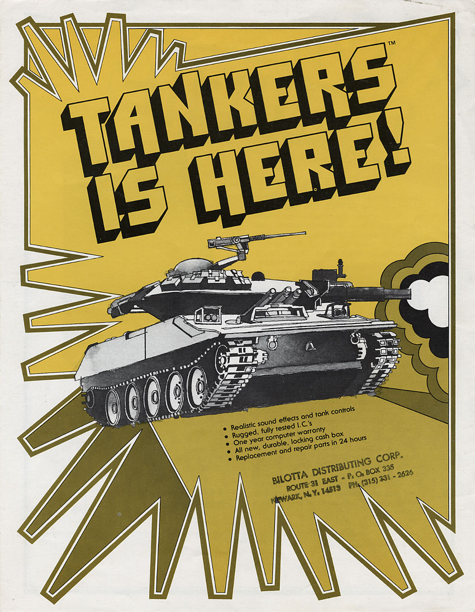
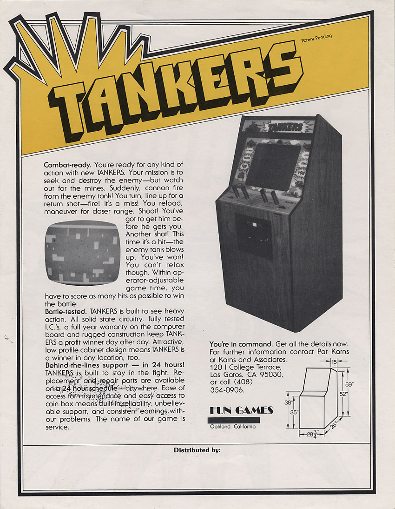
Tankers belongs to the most legally sensitive part of the Fun Games catalog.
Atari’s complaints against Fun Games were not simply about general resemblance. Contemporary court reporting tied Larry Leppert’s work to Atari tank-game technology and described the use of Atari ROMs and schematic material.
That is serious.
The history should not soften it into vague language about “inspiration.”
At the same time, Tankers was a real commercial Fun Games product, not merely a disputed laboratory board.
Advertising survives. Technical documentation survives. The game circulated commercially. It later appeared in used-equipment listings, and modern preservation has recovered it to a meaningful degree.
That combination makes Tankers especially useful historically.
It is both an arcade product and a legal artifact.
Through it, we can see how technical knowledge moved between companies during an era when the boundaries around software, circuitry, employee knowledge, and proprietary information were still being tested in real time.
Biplane: The Game That Changes The Company’S Story
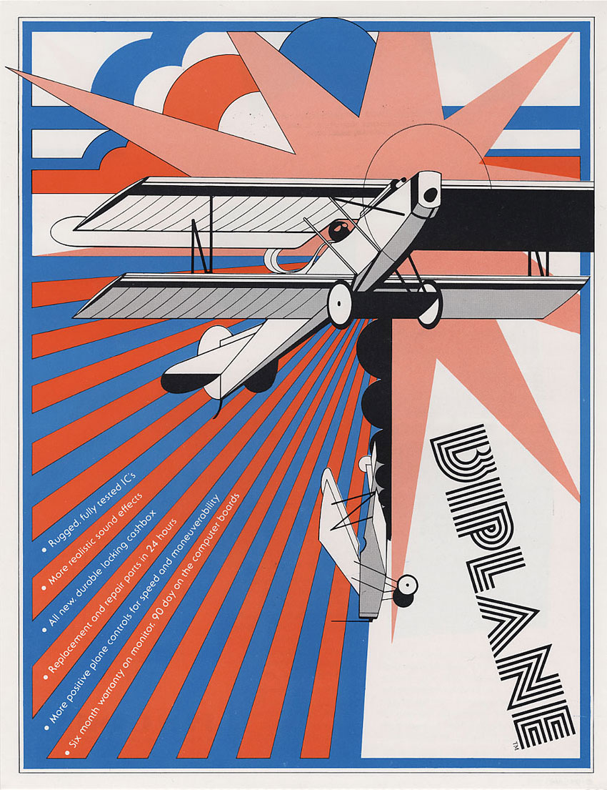
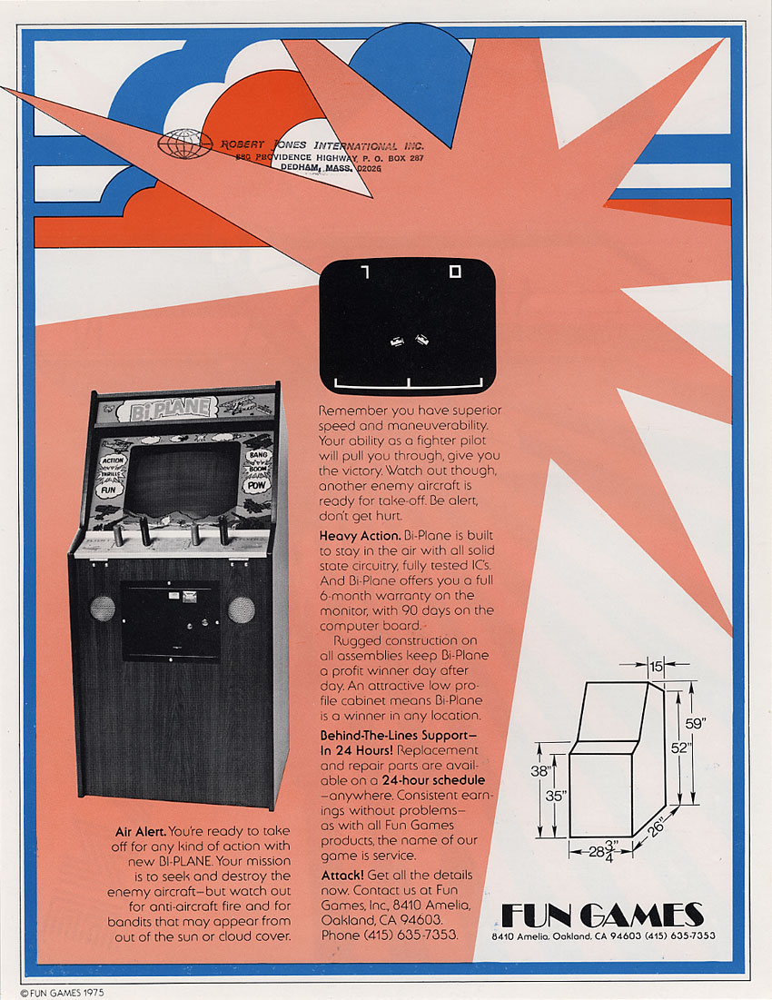
BiPlane may be the most important Fun Games game because it connects the technical controversy, commercial success, and later premium-product strategy.
The game survives through original advertising, a substantial instruction manual, cabinet evidence, and modern preservation.
Its release date has been muddled in later databases, with 1974 and 1976 both appearing in modern references. Contemporary Fun Games material supports 1975 as the commercial introduction, while the surviving manual is dated January 1976.
The distinction matters.
A manual date is not automatically a release date.
The company could continue issuing service documentation after a product had already entered the market.
BiPlane also sits close to Atari’s Jet Fighter lineage and to Larry Leppert’s engineering work. Later sources sometimes attach Lyle Rains’ name directly to BiPlane, but the safer treatment is to separate the Atari-side design ancestry from the Fun Games implementation. Rains is important to the antecedent Atari work; Leppert is strongly tied to Fun Games’ use and completion of Atari-derived engineering material.
A single-person “designed by” credit would overstate the evidence.
Most importantly, BiPlane appears to have been a genuine operator-level success.
Contemporary profit surveys placed the game among well-regarded video titles in 1976. It was being mentioned alongside products from far larger manufacturers. The survey data should not be treated as audited national earnings, but it is strong evidence that operators considered BiPlane profitable enough to rank.
That changes the whole Fun Games story.
The company did not spend two years unsuccessfully begging the market to notice it.
At least one of its products broke through.
The Atari Litigation: What Happened, And What Did Not
The Fun Games–Atari conflict is central to the company’s history, but it has often been reduced to a misleading sentence: Atari sued Fun Games, won, and Fun Games disappeared.
The surviving record does not support that sequence.
Atari pursued Fun Games in state court over conduct involving former employees, technical material, ROMs, schematics, and related issues. Contemporary reporting described damaging facts concerning Larry Leppert’s movement from Atari through Mar-Quin and into Fun Games and the use of Atari-derived material in Fun Games products including Tankers and BiPlane.
Atari initially obtained temporary relief.
Then the story became more complicated.
On March 17, 1976, Judge John M. Brenner dissolved the temporary restraining order and denied Atari’s request for a preliminary injunction.
A trade article initially reported the development under a headline that implied Atari had won the litigation. Fun Games’ attorney objected, and the publication later ran a correction explaining that the court had not decided ultimate liability or damages.
That correction is crucial.
The preliminary proceeding did not amount to a final judgment that Atari had won the entire case.
Nor did it establish that Fun Games was innocent.
The surviving record shows serious allegations and adverse factual findings, but the procedural result in March 1976 allowed Fun Games to continue operating.
And continue it did.
That alone disproves the simplest version of the story.
Fun Games After The Lawsuit
If Atari had simply sued Fun Games out of existence in early 1976, the rest of the company’s history would not exist.
Instead, Fun Games kept selling.
It pushed BiPlane 4.
It marketed Race.
It hired and used sales personnel.
It worked international channels.
It prepared trade-show activity.
It launched promotions.
It released King.
The company remained publicly active into late 1976 and still appeared in distributor networks in early 1977.
That does not mean the litigation was harmless.
Legal disputes consume money and management attention. They can make partners nervous and complicate financing. For a small manufacturer, those pressures can be severe.
But the evidence does not support treating the lawsuit as a single-cause execution.
The later financial collapse had a broader structure.
Fun Games In The Marketplace
The legal history can easily overshadow the commercial one.
That would give the wrong impression.
During 1976, Fun Games behaved like an ambitious coin-op manufacturer trying to compete with larger companies on normal commercial terms.
The company talked openly about the importance of distributors and operators. Pat Karns described the manufacturer, distributor, and operator as linked levels of one business. Fun Games’ public philosophy placed marketing ahead of engineering: the market should tell the engineering department what to build.
That approach shows up in the promotional activity surrounding BiPlane 4.
Fun Games did not simply ship the machine and issue a price sheet. It launched a distributor-centered campaign with promotional material, prizes, and personal appearances by company executives. Contemporary coverage shows Alvarez, Karns, and Ken Anderson participating directly in the push.
This was a company trying to build a dealer network and create excitement around its equipment.
The distributor mattered because the person eventually playing the machine was not the manufacturer’s direct customer.
Fun Games had to convince a distributor.
The distributor had to convince an operator.
The operator had to believe the machine could justify its floor space and purchase price.
Only then did the player get a chance to put in a quarter.
Every level could kill the sale.
Fun Games appears to have understood that very well.
Biplane 4: Turning A Success Into A Premium Attraction
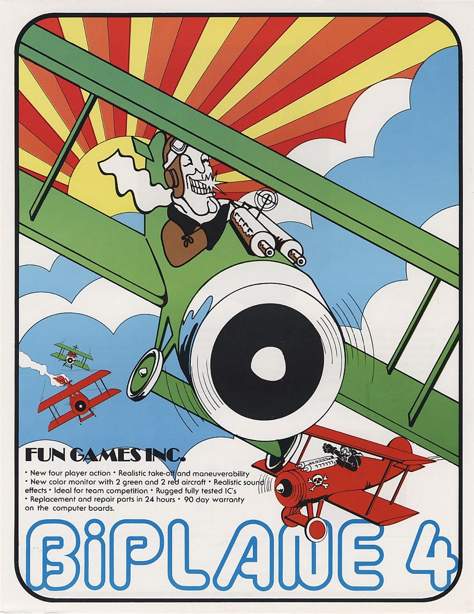
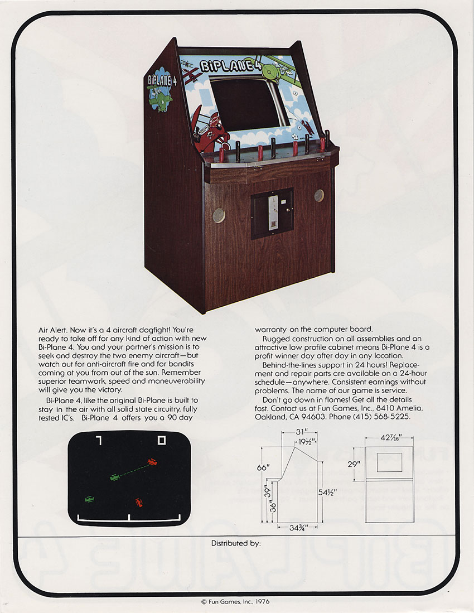
BiPlane 4 makes much more sense when viewed as an attempt to build on BiPlane’s operator acceptance.
The four-player version was larger, more expensive, more social, and more visually dramatic than the earlier machine.
Its approximately $5,000 operator price was substantial for 1976.
Fun Games responded by selling not only the game, but the economics around the game.
Alvarez claimed production would be limited to roughly 350 units worldwide in order to protect operator resale value.
The idea is fascinating because it reverses the normal manufacturer incentive.
The factory generally benefits from selling more machines. The operator may benefit from scarcity. Fun Games tried to turn that conflict into a sales advantage by promising restraint.
Whether the company actually completed 350 units remains uncertain.
The policy itself is historically clear enough to matter.
Fun Games was telling operators that it understood depreciation and saturation.
The company also supported BiPlane 4 with a conspicuous promotion through participating distributors. Prizes and promotional materials made the launch feel more like a major campaign than the release of an obscure product from a tiny firm.
This was Fun Games trying to act bigger than its age.
The Afterlife Of The $5,000 Machine
Used-equipment advertising provides an unusually vivid reality check on the limited-production strategy.
A BiPlane 4 that cost around $5,000 new was being advertised used for a little over $1,000 by late 1977. Later listings dropped below that, and by the early 1980s a four-player BiPlane example appeared for only a few hundred dollars.
Those figures are asking prices from particular distributors, not a national depreciation index.
Still, the direction is unmistakable.
Scarcity did not protect BiPlane 4 from technological obsolescence.
That does not mean Alvarez’s idea was foolish. The relevant comparison would be a hypothetical world in which thousands of units had flooded the market. Limited production may indeed have supported value relative to that alternative.
What it could not do was stop the entire arcade industry from changing.
By the end of the 1970s, games such as Space Invaders and Asteroids had changed player expectations.
By the early 1980s, Pac-Man and the color-video boom had pushed the market even farther.
A four-player black-and-white machine from 1976 could be historically fascinating and economically obsolete at the same time.
That is one reason so many early cabinets disappeared.
They were not born as collectibles.
They were depreciating capital equipment.
Race: Fun Games Moves Onto The Road
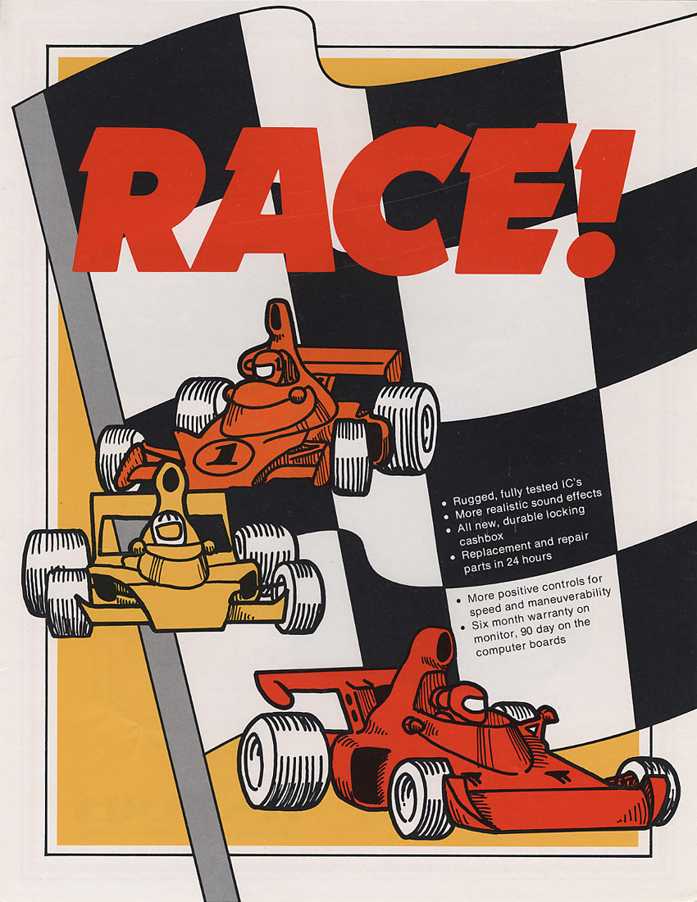
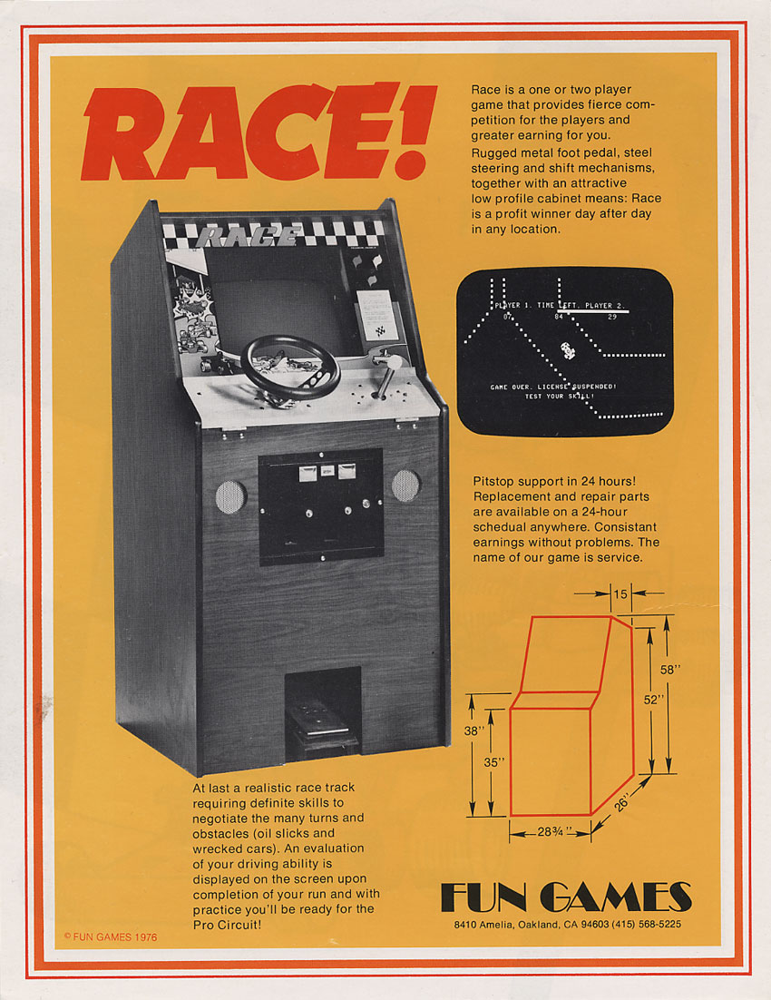
Race broadened the catalog into the driving category.
The title is important because it survives unusually well on paper.
Its service manual documents the cabinet, controls, power supply, circuitry, wiring, adjustments, and test points. For an obscure 1976 machine, that is a rich technical record.
Commercial evidence is also strong.
Trade reporting described Race as a one- or two-player driving game with a large changing playfield. Distributor samples circulated. Pat Karns later said the product was doing well.
The game also appears to have received favorable attention in Europe.
That international angle fits the broader Fun Games sales structure. The company was not thinking only about Oakland or California. It had people and arrangements aimed at overseas business.
Race also creates one of the most interesting preservation paradoxes in the catalog.
The machine is historically secure.
We know what it was.
We know it was sold.
We know a great deal about how it was constructed.
But surviving programmable data is less complete than the paperwork.
That makes Race a useful reminder that documentation and preservation are not the same thing.
A manual can survive while the game itself becomes functionally difficult to reconstruct.
Race And The Exidy Cabinet Question
Race becomes even more intriguing after Fun Games collapses.
Michael Cooper-Hart later remembered Exidy acquiring roughly 300 unused Fun Games driving-game cabinets and repurposing them for Robot Bowl.
The obvious candidate is Race.
It is the only confirmed dedicated Fun Games driving title in the locked seven-game catalog.
The timing fits.
The cabinet category fits.
But the firsthand account does not identify the donor title.
That prevents a definitive statement.
The proper conclusion is that Race is the strongest known candidate for the donor cabinet design, but the identification remains unproven.
That kind of restraint matters because attractive guesses have a way of becoming “facts” once repeated enough times.
King: The Game That Looks Unreleased Only Because So Little Survived
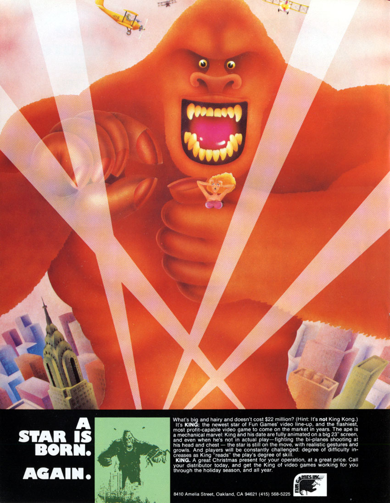
King demonstrates perhaps better than any other Fun Games title why modern survival cannot be used as a substitute for contemporary evidence.
Later references have described King as canceled, unreleased, prototype-only, or under the alternate name Kong.
The period record supports a different conclusion.
Fun Games produced original advertising.
The game was publicly marketed.
Contemporary trade reporting described it as newly released late in 1976.
That is enough to establish commercial release.
What remains unknown is scale.
No reliable production total has been recovered.
No strong surviving-cabinet census exists.
The company collapsed soon after the game appeared.
King may therefore have had a very small production run even though it crossed the line into commercial release.
The title itself should remain King.
The giant ape imagery made the intended pop-culture association obvious, and the flyer played knowingly with that association, but “Kong” should not be counted as a separate Fun Games family.
The scarcity of surviving King hardware also illustrates survival bias.
If almost no cabinets survive, a later researcher may assume the game was never sold.
But the contemporary record can tell a different story.
A commercially released game can become almost invisible if the company fails quickly and the hardware is not preserved.
The Three Non-Video Projects
One of the most tantalizing loose ends in Fun Games history is the company’s statement that engineers were developing three non-video amusement products.
This information came from contemporary reporting, not a later rumor.
The company was worried about video saturation. Operators had been flooded with electronic games, and Fun Games was exploring products that combined newer electronics with older electro-mechanical principles.
The strategic meaning is more important than the missing names.
Fun Games was only about a year into the video business and was already considering diversification away from pure video.
That tells us how nervous the market could feel from the inside.
Later histories often portray the rise of arcade video as inevitable.
People living through it had no such certainty.
They had seen the Pong boom create a flood of nearly interchangeable machines.
They knew operators had finite floor space.
They understood that the category could overheat.
Fun Games was trying to hedge.
No confirmed names for the three non-video projects have been recovered.
They do not belong in the seven-game video count.
They do belong in the company history because they reveal management thinking.
Pat Karns, Satish Bhutani, Ken Anderson, And The Sales Organization
Fun Games was not built around one engineer or one founder.
Pat Karns was especially important on the sales side. His Atari experience gave the company an immediate connection to established coin-op sales practices.
Contemporary material places him in a visible role speaking about product strategy, distributors, and operator needs.
Satish Bhutani served as director of international marketing. That title alone proves the company’s export ambitions were formal enough to justify dedicated management responsibility. Bhutani left Fun Games in 1976 for Project Support Engineering, where he took another international marketing position.
His departure did not immediately stop the company.
That is useful chronologically because it shows the later decline cannot be reduced to one executive leaving.
Ken Anderson also appears prominently in marketing activity. He is visible in BiPlane 4 promotional coverage and later becomes relevant during the proposed Meadows asset transition.
Joe Regan and Tony Rodriguez surface in connection with the 1977 Meadows arrangement.
The record is thinner for them, but their expected movement reinforces an important point: when Fun Games failed, people were among the assets that mattered.
Knowledge moved with employees.
The United Games And Elcon Branches
Take Five and Take Seven became entangled with related products from United Games and Elcon.
United’s Video 5 and Video 5 Plus 2 appear closely related to the Fun Games multi-game line. Documentation indexes and later technical references pair them, while contemporary descriptions of the United product use a different set of game names.
That difference is important.
It suggests either renaming, repackaging, related circuitry, licensing, or some form of derivative development.
What the surviving evidence does not provide is a clean contract establishing the business relationship.
Therefore the article should describe these machines as related or derivative, not confidently licensed unless stronger documentation surfaces.
Elcon’s five-game machine presents a similar problem.
Modern sources describe it as a Take Five clone or derivative.
Again, that makes it historically relevant but does not create another Fun Games original.
The catalog is a count of original Fun Games video-game families, not every machine derived from them.
Bust Out And The Shadow Of Breakout
Bust Out deserves a separate interpretive note because its historical significance can easily be overstated or ignored.
The mode existed inside Take Seven.
It used a brick-breaking concept recognizable to anyone familiar with Breakout.
Its date places it close enough to the early development history of brick-breaking games to deserve attention.
That is the strong conclusion.
The weak conclusion would be to claim Fun Games invented Breakout or that Atari copied it.
The evidence does not support that certainty.
Development work can predate public release. Ideas circulated quickly. Several designers could reach similar concepts independently.
So Bust Out belongs in the chronology as evidence that the brick-breaking idea was present in Fun Games’ commercial work early.
It should invite questions, not pretend to answer ones the surviving record cannot settle.
Late 1976: Fun Games Still Looks Alive
The months immediately before the collapse are especially important because Fun Games did not look publicly dead.
Race was being promoted.
King was introduced.
Distributor contests were running.
Trade-show activity continued.
International distribution arrangements were being made.
Fun Games still appeared in distributor directories.
This makes the 1977 failure feel abrupt because, from the outside, it was abrupt.
That does not prove management was unaware of financial trouble.
A company can continue aggressive selling while cash problems worsen internally.
In fact, financial pressure can increase the desire to sell harder.
The point is that the public record does not show a long, graceful wind-down.
It shows a company still acting like a going concern and then rapidly entering an asset-and-creditor phase.
1977: The Language Changes
Once Fun Games enters 1977, the vocabulary surrounding the company changes.
The earlier words are release, promotion, production, distributor, engineering, and sales.
The later words are assets, creditors, liquidation, service responsibility, security interest, receivables, and bankruptcy.
That shift is the corporate collapse.
Fun Games did not merely fade from advertising.
It reached a point where the pieces of the company had to be sorted out.
Meadows Steps In
Meadows Games was the first major company publicly associated with acquiring pieces of Fun Games.
In March 1977, contemporary trade reporting said Meadows was in the process of acquiring certain Fun Games assets, including Take Seven.
The wording is critical.
Meadows did not announce a merger.
It explicitly said it would not assume Fun Games’ debts and liabilities.
Several Fun Games employees, including Ken Anderson, Joe Regan, and Tony Rodriguez, were expected to move.
That is exactly what a distressed-asset situation can look like.
The buyer wants useful products, inventory, knowledge, and people.
It does not want the financial obligations attached to the failed corporation.
Take Seven’s presence in the proposed arrangement also proves that the game still had perceived value in 1977.
The Meadows Deal Changes
The initial transaction did not proceed cleanly.
Later reporting said Meadows and Fun Games had decided not to complete the previously announced purchase agreement, and Meadows would not continue with Take Seven in the manner earlier expected.
At first glance, that sounds as though nothing transferred.
But later retrospective coverage says certain Fun Games assets had been acquired by Meadows when the company ceased operations.
The two reports can be reconciled if the transaction is understood as partial and changing rather than all-or-nothing.
Some assets, inventory, personnel, or rights may have moved while the broader agreement collapsed.
That interpretation is more cautious than saying Meadows bought Fun Games and more accurate than saying the deal simply vanished without leaving any trace.
The Creditors Take Over The Ending
Once normal operations stopped, Fun Games entered a different kind of existence.
Creditors organized.
A committee was formed.
Remaining assets were evaluated.
Accounts receivable became important.
The goal was no longer to build games.
The goal was to recover money.
This is the corporate afterlife of an arcade manufacturer, and it is rarely visible in such detail.
The remaining value was not only physical equipment.
It included money owed to Fun Games, secured claims, inventory, legal claims, and whatever could still be sold.
Accounts receivable are especially revealing.
A company can have strong sales on paper and still run out of cash if customers have not yet paid.
For a manufacturer, growth itself can become a financing problem. Parts and labor have to be paid before all customer money arrives. More products mean more inventory. More distributors can mean more receivables. More machines in the field mean more service obligations.
Fun Games may have been caught in exactly that kind of squeeze.
Corobilt Returns At The Collapse
The creditor record gives the Fun Games–Corobilt relationship its strongest financial evidence.
Corobilt held a perfected security interest in Fun Games’ assets.
That means the relationship was not casual.
Corobilt had a legally protected financial claim tied to company property.
Even more striking, Corobilt reportedly agreed to subordinate its position so ordinary creditors could receive recovery ahead of the priority Corobilt might otherwise have exercised.
That decision is difficult to explain if Corobilt was merely a distant lender.
It suggests a relationship deeper than an ordinary arms-length transaction, though the exact reason remains unknown.
The article should not invent motive.
It should record the behavior.
That behavior strengthens the conclusion that Corobilt was deeply involved financially with Fun Games even though the ownership structure remains unproven.
The Landlord Was Not Corobilt
One small correction is worth preserving because it prevents the corporate relationship from becoming too tidy.
Creditor reporting treated the former landlord separately from Corobilt.
Therefore Corobilt should not simply be described as the landlord of the Fun Games operation.
The site relationship, Alvarez connection, and secured financing are real.
The exact property and lease arrangements were more complicated.
That is a useful example of how research improves when similar-looking relationships are kept distinct rather than collapsed into one story.
The Federal Bankruptcy Trail
Fun Games appears as a debtor in a Northern California federal bankruptcy record under case number 77-31121.
This is a valuable archival anchor because it confirms that the collapse entered formal federal proceedings.
The full original docket has not yet been recovered in the present research package.
Therefore several details remain unknown.
The exact bankruptcy chapter should not be guessed.
The complete creditor matrix should not be reconstructed from fragments.
The exact schedule of assets and liabilities remains unavailable.
What can safely be said is that Fun Games’ financial failure generated a federal bankruptcy estate and that traces of creditor claims remained in the court system.
Among creditor names preserved in the unclaimed-funds system are Hamilton/Avnet Electronics and Lika Corp.
Those names help turn an abstract financial collapse into an actual supply-chain problem.
A video-game manufacturer owed money to real vendors.
Those vendors had supplied goods or services that kept production moving.
When Fun Games failed, they were left trying to recover what they could.
The Second Atari Case: Fun Games Becomes The Plaintiff
The legal story becomes even stranger after the operating company is effectively dead.
Fun Games had a separate federal antitrust action against Atari.
This was not simply the next stage of Atari’s earlier state-court case.
It was a different legal track.
Fun Games was the plaintiff.
Atari and Nolan Bushnell were among the defendants.
By the time Fun Games ceased normal operations, creditors still considered the antitrust claim potentially valuable because a recovery could produce money for the estate.
That is a remarkable form of corporate survival.
The company could no longer manufacture games.
The employees were dispersing.
Assets were being sold.
Yet a lawsuit remained an asset.
Later testimony in unrelated Magnavox litigation referenced documents produced in the Fun Games antitrust matter, showing that the case remained relevant into at least 1978.
The final outcome remains unresolved.
No reliable final judgment or settlement record has yet been recovered.
Therefore the article should not say Atari won.
It should not say Fun Games won.
It should say the final disposition is unknown.
Why The Simple “Atari Killed Them” Story Fails
It is easy to understand why the simple story survived.
Atari accused Fun Games of using its technology.
The allegations involved former Atari personnel.
The company failed not long afterward.
That sequence practically writes its own myth.
But chronology matters.
Fun Games continued operating after the crucial 1976 preliminary-injunction ruling.
It introduced and marketed more games.
It pursued distributors.
It remained commercially visible.
Its later collapse involved receivables, secured financing, creditors, inventory, and asset transfers.
Atari litigation was undoubtedly a pressure.
It was not the entire explanation.
The more defensible conclusion is that Fun Games suffered a compound financial failure inside an expensive and volatile market.
Legal costs were one component.
Working capital may have been another.
Unsold inventory appears relevant.
Rapid product development cost money.
Sales and international expansion cost money.
Receivables delayed cash.
The company was young.
Its financing structure was fragile enough that Corobilt’s security interest mattered when the end came.
There is no need to pick one cause when the evidence supports several interacting pressures.
Exidy Buys What Is Left
After Meadows and the creditors enter the story, another major arcade manufacturer appears: Exidy.
Michael Cooper-Hart later recalled Exidy acquiring remaining Fun Games property in Oakland, including approximately 300 unused driving-game cabinets.
The number is striking.
Three hundred cabinets are not scrap.
They represent a meaningful production commitment and a significant amount of tied-up capital.
Whether the cabinets had been built specifically for Race remains unresolved.
Race is the obvious known candidate, but the firsthand recollection does not name the title.
What is certain is that Exidy found a use for them.
Robot Bowl And The Ball-Return Fossil
Exidy repurposed the driving cabinets for Robot Bowl.
Because the cabinets had been designed for driving equipment, they contained an opening associated with the original control arrangement.
Robot Bowl did not need a driving pedal.
The repurposing therefore left a physical design problem.
The solution became one of the most memorable details in the whole Fun Games story: the leftover opening was covered or reinterpreted and labeled as a ball-return area.
The result is almost archaeological.
A physical feature from one failed company’s unused cabinet survived inside another company’s commercial game because reusing the wood was cheaper than discarding it.
That is arcade history at its most practical.
The Fun Games identity vanished from the cabinet.
The Fun Games manufacturing decision remained physically present.
The Company Disperses
Fun Games did not disappear in one moment.
It dispersed.
People moved into other companies.
Some assets moved toward Meadows.
Cabinets moved toward Exidy.
Receivables moved into creditor liquidation.
Legal claims continued in court.
Manuals and schematics stayed with operators, distributors, technicians, and later collectors.
Games circulated in the used-equipment market.
The Oakland building remained.
That is a better model of the ending than a single date followed by silence.
Larry Leppert After Fun Games
Larry Leppert later appears in the Meadows story, continuing the chain of personnel movement that had already taken him from Atari through Mar-Quin into Fun Games.
His career path is a reminder that corporate death did not erase technical experience.
Atari could lose people.
Mar-Quin could fail.
Fun Games could fail.
The engineer could still move on.
Early arcade history is full of company names that vanish while the people continue shaping later products.
That human continuity often matters more than the corporate paperwork.
Why Fun Games Failed
No recovered document provides a single definitive explanation for Fun Games’ failure.
The evidence instead supports a cluster of pressures.
The company operated in a crowded market.
It carried several products at once.
It built expensive hardware.
It spent money on sales and promotions.
It had legal expenses and uncertainty.
It had accounts receivable.
It had secured financing.
It had inventory.
It appears to have had large quantities of unfinished or unused cabinets.
It lost or transferred personnel.
It was trying to expand internationally.
It was only about two years old.
Any one of those pressures might have been survivable.
Together they could destroy a small manufacturer.
The most plausible interpretation is therefore a compound financial collapse rather than a single event.
One possibility deserves particular attention: undercapitalized growth.
BiPlane appears to have found real operator acceptance.
Race was described positively.
Used Fun Games machines continued circulating after the company died.
This was not necessarily a company with zero demand.
A manufacturer can fail while selling product if it cannot finance inventory, parts, labor, credit terms, and service obligations quickly enough.
The receivables-heavy creditor record fits that possibility.
Without internal financial statements, it remains an interpretation, not a proven diagnosis.
But it is a stronger interpretation than the old claim that Atari simply sued the company to death.
The Used-Equipment Market: What Happened After The Factory Stopped
Used-equipment advertisements are some of the most revealing evidence in the project.
After Fun Games ceased normal operations, machines such as Tankers, BiPlane, Race, Take Five, and BiPlane 4 continued appearing in dealer listings.
That matters because modern rarity can be misleading.
A game that is almost impossible to find today may have been ordinary commercial equipment in 1977.
Arcade cabinets were not treated as future museum pieces.
They were depreciating assets.
Operators bought them to earn money.
When earnings dropped, the machines were sold.
When newer games made them less attractive, prices fell.
Eventually many cabinets were converted, stripped for parts, stored badly, or discarded.
The used ads restore that lost normality.
A modern collector may see a surviving BiPlane as an extraordinary artifact.
A distributor in the late 1970s could see it as used inventory with a price tag.
That gap between modern rarity and historical normality is essential to understanding why Fun Games looks smaller today than it was at the time.
Preservation: Seven Games, Uneven Survival
Fun Games has seven confirmed original video-game families, but they have not survived equally.
Take Five, Tankers, BiPlane, and BiPlane 4 have comparatively strong modern preservation footprints.
Take Seven, Race, and King remain weaker.
This uneven survival is historically important.
Preservation is not binary.
A game can have a flyer and no known program dump.
It can have a manual and missing programmable devices.
It can have ROMs and no cabinet.
It can have cabinet photographs and incomplete sound.
It can exist in MAME but still carry preliminary status because the original hardware is not fully understood.
For Fun Games, the surviving evidence has to be read across all those categories.
Take Five: Substantially Preserved
Take Five has original advertising, schematic material, and modern emulation.
That combination makes it one of the better-preserved Fun Games products.
The existence of related United and Elcon machines also creates additional technical evidence, although those derivatives must not be confused with separate Fun Games originals.
Take Seven: Documented But Vulnerable
Take Seven is historically secure but digitally weaker.
The flyer preserves the game selections.
Bust Out gives the machine unusual historical interest.
Yet the modern playable preservation path is less complete than Take Five’s.
That makes Take Seven a high-value target for future board discovery or ROM dumping.
Tankers: Preserved And Legally Important
Tankers benefits from technical documentation and modern emulation.
Its preservation value is increased by the legal story because every recovered technical detail helps researchers understand what Atari was objecting to and how Fun Games implemented the product.
Biplane: Strong Paper Trail, Stronger Market Story
BiPlane has advertising, a substantial manual, modern preservation, cabinet evidence, and contemporary evidence of operator acceptance.
That makes it arguably the best-rounded surviving Fun Games title.
It is also the game most responsible for correcting the idea that Fun Games never achieved meaningful success.
Biplane 4: The Premium Machine
BiPlane 4 survives through company advertising, trade coverage, preservation work, and some cabinet evidence.
The surviving record also preserves unusually rich business context: price, promotion, limited-production strategy, and later used-market depreciation.
Few obscure 1970s games can be studied simultaneously as software, hardware, marketing product, and depreciating capital equipment.
Race: Paper Outlives Program Data
Race is one of the strongest examples of a game being better preserved technically on paper than digitally.
Its service material is excellent.
Its commercial release is secure.
Its complete programmable preservation remains a weaker point.
That makes the title important for future preservation work.
King: Commercially Real, Physically Elusive
King has enough contemporary evidence to establish commercial release.
What it lacks is a strong modern physical footprint.
That mismatch explains why later databases have sometimes treated it as canceled or prototype-only.
The correction is important: poor survival is not proof of non-release.
The Locked Seven-Game Register
The final Fun Games video catalog remains:
1. Take Five — 1975 Confirmed commercial release. Multi-game product. Original flyers and schematic material survive. Modern preservation exists.
2. Take Seven — 1975 Confirmed commercial release. Seven selections including Bust Out. Important to early brick-breaking chronology. Preservation weaker.
3. Tankers — 1975 Confirmed commercial release. Central to Atari-related technical controversy. Modern preservation exists.
4. BiPlane — 1975 Confirmed commercial release. Strong manual and advertising trail. Significant operator acceptance. Atari-derived technical ancestry.
5. BiPlane 4 — 1976 Confirmed commercial release. Four-player premium machine. Limited-production marketing strategy. Modern preservation exists.
6. Race — 1976 Confirmed commercial release. Strong service documentation. Driving game. Complete preservation remains uncertain.
7. King — late 1976 Commercially marketed and contemporaneously described as newly released. Production quantity and distribution extent unknown. Preservation weak.
Why The Count Is Seven
The count is not seven because one modern database happens to list seven.
It is seven because the evidence survives title-by-title reconciliation.
The count excludes the supposed 1972 “Fun Games Pong” attribution because it does not fit the company’s known chronology and lacks persuasive contemporary linkage to Alvarez’s Oakland operation.
It excludes Kong as a separate title because the period advertising identifies the game as King.
It excludes United Games and Elcon derivatives because they are associated products rather than additional original Fun Games families.
It excludes the three unnamed non-video development projects because they have not been identified as commercial releases and are not video-game families in any case.
It excludes ordinary revisions or alternate names.
Seven is therefore an evidence-based family count, not a database total.
The People Register
Oberto Alvarez — founder and president. The central business figure. Formerly associated with Corobilt. Responsible for much of the company’s operator-facing philosophy and premium-product positioning. Exact ownership stake remains unknown.
Pat Karns — sales and marketing leadership. Former Atari sales figure. Important to distributor relationships, product promotion, and public articulation of Fun Games’ strategy.
Larry Leppert — engineering. Former Atari engineer who moved through Mar-Quin and into Fun Games. Central to the technical and legal controversy surrounding Tankers and BiPlane. Should not automatically be credited with the entire Fun Games catalog.
Satish Bhutani — director of international marketing. Demonstrates that overseas business was organized formally enough to have dedicated management. Left in 1976 for Project Support Engineering.
Ken Anderson — marketing executive. Visible in BiPlane 4 promotion and later connected to the expected Meadows personnel transition.
Joe Regan — Fun Games employee connected to the 1977 Meadows transition.
Tony Rodriguez — Fun Games employee connected to the 1977 Meadows transition.
Lyle Rains — important to the Atari-side design ancestry associated with the technical lineage behind BiPlane. Should not be casually converted into a simple sole-designer credit for the Fun Games commercial product.
What Fun Games Actually Was
After separating the myths, aliases, lawsuits, and later database noise, the company becomes easier to define.
Fun Games was a small but serious Oakland arcade manufacturer operating during the unstable middle phase of the first video-game boom.
It combined industrial support, experienced arcade personnel, aggressive sales, in-house or closely controlled engineering, domestic and international ambitions, and a willingness to move across several game categories in a very short time.
It was not merely a software house.
It was not merely a cabinet assembler.
It was not merely a clone company.
It was not a large vertically integrated giant.
It was a compact manufacturing business trying to grow quickly enough to establish itself before the market changed again.
For a short time, it succeeded.
Then the financial structure underneath that success failed.
The Fun Games Chronology
Before 1975 — Oberto Alvarez works in the Corobilt industrial environment and gains management and manufacturing experience.
1975 — Mar-Quin’s attempted video-game operation and personnel movement help form part of the technical background from which Fun Games emerges.
Approximately May 1975 — Fun Games enters the coin-operated video-game business in Oakland.
1975 — Take Five, Take Seven, Tankers, and BiPlane establish the first wave of the company catalog.
Late 1975 into early 1976 — Atari pursues Fun Games over former personnel and technical material.
March 1976 — Atari fails to obtain the broad preliminary injunction it sought; the temporary restraining order is dissolved. Ultimate liability and damages are not decided at this stage.
March 1976 — Fun Games publicly describes a market-driven development philosophy and reveals work on three non-video amusement projects.
1976 — BiPlane gains meaningful operator acceptance.
Spring and summer 1976 — BiPlane 4 becomes the center of an expensive four-player push and distributor promotion.
Mid-1976 — Race enters distribution channels.
Mid-1976 — Satish Bhutani leaves Fun Games after serving as director of international marketing.
Autumn 1976 — Fun Games continues promotions, distributor activity, and trade-show preparation.
Late 1976 — King is publicly marketed and described as newly released.
Early 1977 — Fun Games still appears in normal distributor networks.
March 1977 — Meadows announces the planned acquisition of certain Fun Games assets and expected movement of some personnel while explicitly refusing Fun Games debts and liabilities.
Spring 1977 — The broader Meadows agreement changes and is not completed as originally announced, though later reporting indicates certain assets did transfer.
1977 — Fun Games ceases normal operations. Creditors organize and remaining assets, especially receivables, are targeted for liquidation.
1977 — Corobilt’s secured financial interest becomes part of the winding-down process.
1977 — Federal bankruptcy proceedings leave the Fun Games debtor case number 77-31121 in the Northern California record.
1977 and after — Fun Games’ antitrust action against Atari remains potentially valuable to creditors.
1977–1978 — Fun Games machines continue circulating in the used-equipment market after the manufacturer is gone.
Later 1970s — Exidy acquires substantial leftover Fun Games cabinet inventory, including roughly 300 unused driving-game cabinets, and reuses them for Robot Bowl.
Early 1980s — Used-market prices for former premium Fun Games machines illustrate how quickly early arcade capital equipment could depreciate.
What The Flyers Preserve
The surviving Fun Games flyers are more than decorative material.
They preserve the company’s sales language.
Take Five and Take Seven sell quantity.
BiPlane and Tankers sell recognizable competition.
BiPlane 4 sells spectacle.
Race sells a driving environment.
King sells theme.
The flyers therefore reinforce the marketing-first philosophy found in contemporary interviews.
They show how Fun Games wanted distributors and operators to understand each product.
What The Manuals Preserve
The manuals reveal the factory behind the marketing.
BiPlane and Race service material preserves board connections, controls, adjustments, troubleshooting, power systems, and wiring.
When an original cabinet disappears, the manual becomes a partial substitute for the missing machine.
It cannot preserve the sound in the room, the physical response of the controls, or the exact behavior of the monitor.
But it preserves design assumptions and service practice.
For obscure arcade companies, that is invaluable.
What The Used Ads Preserve
Used-equipment advertising preserves normality.
That may be the most important kind of evidence for a company like Fun Games.
Today, a surviving cabinet can look impossibly rare.
In 1977, it could be a used machine with an ordinary dealer price.
The ads prove that Fun Games equipment was bought, operated, traded, and depreciated within the normal commercial ecosystem.
This is why modern rarity should never be used by itself to estimate original production or commercial importance.
What The Court Record Preserves
The legal record preserves the uncomfortable part.
It shows technical material moving across company boundaries.
It shows Atari objecting.
It shows Fun Games surviving the preliminary stage.
It shows Fun Games later becoming an antitrust plaintiff.
It shows a lawsuit remaining economically relevant after the operating company was gone.
Removing the legal material would make the company easier to celebrate.
It would make the history worse.
What Remains Unresolved
Exact legal incorporation date — not recovered.
Exact legal dissolution date — not recovered.
Exact equity or ownership relationship between Fun Games and Corobilt — not recovered. The financial and operational relationship is substantial but should not be overstated into a parent-subsidiary claim.
Exact final disposition of the Fun Games federal antitrust action against Atari — not recovered.
Exact production quantity for King — not recovered.
Exact production quantity actually completed for BiPlane 4 — not recovered, despite the stated 350-unit limit.
Identity of the three non-video amusement projects — not recovered.
Exact title identity of the roughly 300 Exidy-acquired Fun Games driving cabinets — not recovered. Race remains the strongest known candidate but is not proven.
Complete original bankruptcy docket and chapter — not recovered.
Exact contractual relationship between Fun Games and related United Games / Elcon multi-game products — not recovered.
These are controlled unknowns, not reasons to delay publication.
The Oakland Site: 8410 Amelia Street
Fun Games operated at 8410 Amelia Street in Oakland, California, within the industrial setting also associated with Corobilt Container Company. The documented address connects its arcade products to an actual manufacturing and business location, rather than simply a name preserved in game databases.
The site remained part of a wider industrial landscape after Fun Games ceased normal operations in 1977. No verified contemporary exterior photograph or appropriately licensed modern site photograph is included here. The current appearance of a building should not be mistaken for how the 1975–1977 facility looked.
For additional context, the connected history of the later asset negotiations appears in Arcade Side B’s Meadows Games company history. The relationship with Corobilt, including its secured-creditor role, is discussed above; neither the address nor the financial relationship establishes that Corobilt legally owned Fun Games.
A Short Life, A Long Shadow
Fun Games lasted roughly two years.
That number can make the company sound insignificant.
Two years was enough.
Enough to release seven confirmed video-game families.
Enough to place a brick-breaking mode inside Take Seven early enough to complicate the simple Breakout chronology.
Enough to produce a game, BiPlane, that appears to have achieved meaningful operator success.
Enough to attempt a premium four-player strategy with BiPlane 4.
Enough to enter the driving market with Race.
Enough to develop an international sales function.
Enough to experiment with non-video ideas because management was already worried about video saturation.
Enough to fight Atari over technology.
Enough to pursue Atari on antitrust grounds.
Enough to build up receivables, debt, secured financing, and inventory.
Enough to collapse.
Enough for Meadows to want selected assets.
Enough for Exidy to reuse the physical leftovers.
Enough for the games to continue circulating after the company itself was gone.
That is an extraordinary amount of history compressed into a very short operating span.
Why Fun Games Belongs On Arcade Side B
Fun Games was not one of the giants.
It did not define an era the way Atari, Midway, Taito, Namco, Sega, or Nintendo eventually would.
Its seven games did not all become classics.
Its corporate life was not stable.
Its technical history includes behavior that deserves critical treatment.
Its ending was financially ugly.
Those facts are not reasons to ignore it.
They are the reasons the company belongs in an archive devoted to the overlooked side of arcade history.
Large companies show us what survived.
Companies like Fun Games show us how much did not.
The record reveals people leaving one company for another, ideas moving with them, legal boundaries being tested, distributors trying to decide what to sell, operators worrying about resale value, manufacturers trying to finance growth, and cabinets being treated as ordinary equipment rather than future artifacts.
That is the everyday machinery of an industry becoming real.
The famous winners became brands.
Fun Games became archaeology.
Enough of that archaeology survives to put the company back together.
And once the fragments are assembled, the result is not a footnote.
It is a remarkably complete little history of the first arcade boom itself.
Research and evidence notes
Selected documentary sources and cross-checks
- Play Meter, March 15, 1977 — Meadows asset negotiations — Contemporary report of the proposed transfer of selected Fun Games assets and service responsibilities.
- Play Meter, July 1977 — Fun Games creditors and liquidation — Period coverage of the creditor committee, financial aftermath and antitrust-claim context.
- Cash Box, April 3, 1976 — Atari/Fun Games court reporting — Contemporary litigation report, to be read alongside the subsequent correction.
- Cash Box, May 1, 1976 — correction to the litigation account — Primary correction; preliminary proceedings must not be characterized as a final Atari victory.
- Cash Box, April 2, 1977 — Meadows inventory and support arrangements — Meadows announcement describing specific inventory and after-sales support rather than a full corporate takeover.
- International Arcade Museum — Fun Games historical manufacturer flyers — One archival point of entry for the BiPlane 4 advertising reproduced as period illustration.
- MobyGames — Fun Games corporate catalog — Modern secondary catalog cross-check; production status and dates require period-source reconciliation.
- Museum of the Game — contemporary and collector documentation — Discussion and preservation leads, not a substitute for company advertisements or original records.
- Arcade Side B — Meadows Games — Companion company history of the 1977 asset-transfer context.
Evidence priority for this master:
1. Contemporary Fun Games advertising, manuals, and surviving technical material. 2. Contemporary coin-op trade reporting, including Play Meter and Cash Box. 3. Court and federal bankruptcy traces. 4. Contemporary distributor and used-equipment listings. 5. Surviving firsthand recollections, including Michael Cooper-Hart’s Exidy history. 6. Current MAME and preservation material. 7. Later scholarly and historical reconstruction. 8. Modern arcade databases used as discovery aids and cross-checks rather than automatic authority.
Important controlled corrections:
— Fun Games has seven confirmed original video-game families, not nine. — The supposed 1972 Fun Games Pong attribution is excluded from the Alvarez/Oakland company catalog. — Kong is not counted separately from King. — King is treated as commercially released and marketed, with production extent unknown. — BiPlane is treated as a 1975 commercial introduction; the January 1976 manual is documentation, not proof of a 1976 first release. — The Atari state-court dispute and the later Fun Games federal antitrust action are separate legal tracks. — The March 1976 preliminary-injunction result is not described as a final Atari victory. — Meadows is not described as simply buying the whole company. — Exidy’s approximately 300 driving cabinets are not definitively called Race cabinets. — Corobilt is not called the owner, parent company, or landlord without stronger evidence. — The three unnamed non-video development projects are not added to the seven-game video count. — Modern preservation absence is not treated as evidence that a contemporary commercial release did not occur.